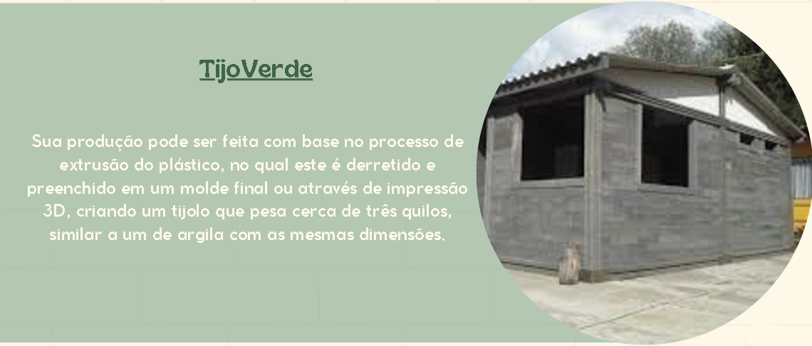

O piso de pneu reciclado é produzido por meio da raspagem de pneus velhos,
gerando fragmentos de diferentes gramaturas, isto é, a conhecida borracha granulada.
Posteriormente, retira-se materiais têxteis e aço, bem como substâncias tóxicas,
em um processo de transformação de alta tecnologia.
Fazer Orçamento
>>>>>>> 4053f84d026e4629f7079d9926b0506068cb1b39
Sustentabilidade: Ajuda a reduzir o desperdício de pneus.
Durabilidade: Pisos de pneu são extremamente resistentes, suportando impactos e desgaste, o que os torna ideais para áreas de alto tráfego.
Absorção de impactos: Proporcionam um bom amortecimento, reduzindo o risco de lesões em quedas, sendo especialmente vantajosos em playgrounds e ginásios.
Impermeabilidade: São resistentes à água, evitando problemas como mofo e bolor.
Isolamento acústico: A composição dos pneus ajuda a reduzir ruídos, tornando os ambientes mais silenciosos

<<<<<<< HEAD
Sustentabilidade: Reduz plástico em aterros, preservando o meio ambiente.
Durabilidade: Tijolos resistentes à água e fogo.
Isolamento térmico: Reduz custos de aquecimento e refrigeração.
Leveza: Facilita transporte e manuseio.
Custo-benefício: Economia com materiais locais reciclados.
Inovação e emprego: Criação de empregos na reciclagem e construção sustentável.
Redução de carbono: Menor emissão de carbono com reciclagem.
Estética: Flexibilidade para design personalizado.
=======
Sua produção pode ser feita com base no processo de extrusão do plástico,
no qual este é derretido e preenchido em um molde final ou através de impressão 3D,
criando um tijolo que pesa cerca de três quilos, similar a um de argila com as mesmas dimensões.
Fazer Orçamento
>>>>>>> 4053f84d026e4629f7079d9926b0506068cb1b39